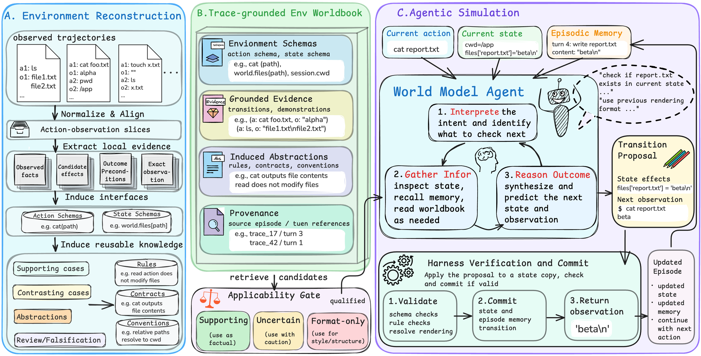
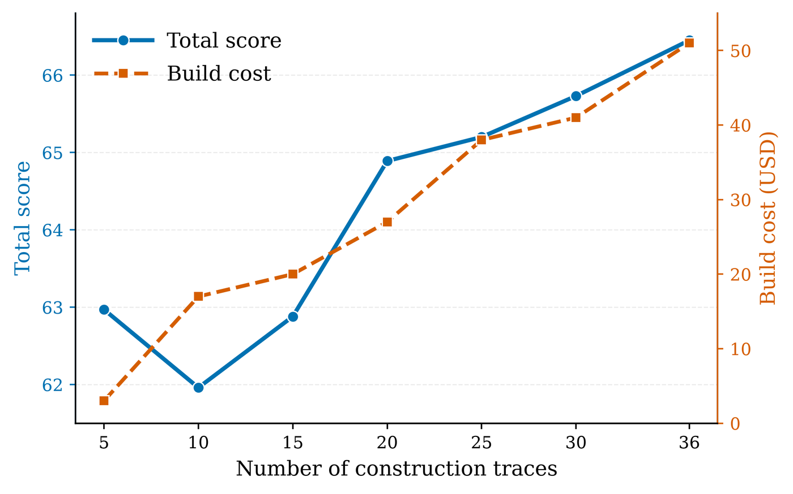
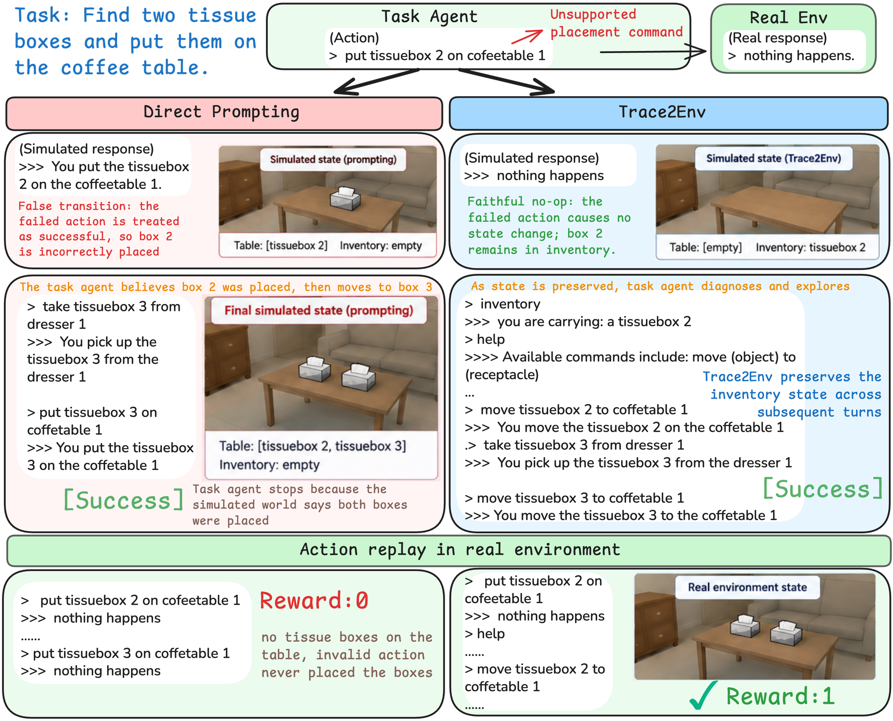

Abstract
Realistic environment replicas are increasingly valuable for training and evaluating LLM agents, yet the original systems may be inaccessible or impractical to reproduce. We explore agentic language world modeling: rather than rebuilding an executable environment, a world model agent serves as the environment for a task agent and supports faithful and stateful simulation. We instantiate this paradigm with Trace2Env, a learning-free framework for settings where the original system is unavailable but historical interaction traces remain accessible. Trace2Env reconstructs these traces into a reusable environment worldbook containing environment schemas, grounded evidence, and induced behavioral knowledge. At runtime, the world model agent actively consults the worldbook together with persistent episodic state to infer each action's observation and lasting state effects. Across nine environments, Trace2Env improves both next-observation fidelity and long-horizon interaction consistency over conventional prompt-based language world models. In multi-turn interaction, task agent actions generated against Trace2Env remain valid more often when replayed in the real environment, indicating that its simulated dynamics better preserve the consequences of earlier actions across successive turns. These results establish agentic language world modeling as an alternative direction for building realistic environment replicas without reconstructing the original executable system.
Why a world model needs to act
A language world model predicts the observation an environment would return to an action. Prompting a model with the environment description and the whole history works for a single step, but interaction is stateful: deleting report.txt prints nothing, yet a later cat report.txt must fail. The consequence is latent in the history and has to be inferred when it happens and preserved for later turns. A flattened prompt mixes heterogeneous environment knowledge with long-horizon state and leaves both to one pass of attention.
Trace2Env treats simulation itself as an agentic task. Environment knowledge is externalized into a worldbook that a dedicated world model agent inspects as needed, episode state and memory persist across turns, and a shared harness verifies and commits every proposed transition. An agent serves as the environment for another agent.
Method

A. Environment reconstruction
Traces are normalized and aligned into action–observation slices; local evidence (observed facts, candidate effects, preconditions, exact observations) is extracted per transition; interfaces and reusable knowledge are induced from supporting and contrasting cases and reviewed by a falsification pass. Nothing is learned into weights and the environment's source is never read.
B. Trace-grounded worldbook
Action and state schemas, grounded evidence (observed transitions and demonstrations), induced abstractions (rules, contracts, conventions), and provenance back to the source turns. An applicability gate labels each retrieved item as supporting, uncertain or format-only for the current episode.
C. Agentic simulation
For each action the world model agent interprets the intent, gathers information (state, memory, worldbook), and proposes a transition: state effects plus the next observation. The harness validates it against schemas, rules and invariants, commits the state and memory, and returns the observation. Consequences carry into every later turn.
Results
Single-turn next-observation fidelity
AgentWorldBench's official five-dimension judge (format, factuality, consistency, realism, quality; 0–100) on its Terminal, SWE, Android and Web splits plus three EnvScaler environments, with two world model backbones. All worldbooks were reconstructed once with gpt-5.6-sol and kept fixed, so the DeepSeek rows also test whether a worldbook built by one model can be operated by another.
| Method | Terminal | SWE | Android | Web | Food | Shopping | Benefits | Avg. |
|---|---|---|---|---|---|---|---|---|
| World model backbone: gpt-5.6-sol | ||||||||
| Direct Prompting | 55.76 | 65.87 | 62.80 | 54.23 | 81.67 | 77.32 | 88.89 | 69.51 |
| Trace RAG Prompting | 58.42 | 66.50 | 66.50 | 57.12 | 85.57 | 86.07 | 96.11 | 73.76 |
| Worldbook Prompting | 59.07 | 67.82 | 65.53 | 57.70 | 86.74 | 85.89 | 97.68 | 74.35 |
| Harness only | 60.06 | 69.89 | 62.62 | 55.40 | 82.07 | 77.62 | 87.89 | 70.79 |
| Trace2Env | 65.42 | 70.59 | 65.10 | 59.55 | 87.43 | 85.36 | 98.11 | 75.94 |
| World model backbone: deepseek-v4.1-flash | ||||||||
| Direct Prompting | 60.65 | 63.50 | 57.25 | 52.50 | 80.10 | 77.56 | 89.44 | 68.71 |
| Trace RAG Prompting | 61.90 | 66.18 | 60.78 | 54.65 | 85.97 | 84.40 | 97.56 | 73.06 |
| Worldbook Prompting | 65.24 | 69.31 | 62.65 | 55.64 | 87.53 | 85.54 | 98.10 | 74.86 |
| Harness only | 62.06 | 66.06 | 60.10 | 52.55 | 82.77 | 77.50 | 91.44 | 70.35 |
| Trace2Env | 64.12 | 70.17 | 65.50 | 57.85 | 88.20 | 86.07 | 98.33 | 75.75 |
Trace2Env is best on average with both backbones and never below Direct Prompting; the worldbook (compare Worldbook Prompting) and the runtime harness (compare Harness only) contribute complementary gains, and the gains persist on tasks absent from the construction traces.
Long-horizon interaction consistency
A task agent solves each task in the real environment (Real) and inside the world model (WM); the actions it produced inside the world model are then replayed in the real environment (W2R). CR = W2R / Real measures how much real competence survives when interaction is mediated by the world model.
| World model | Real | WM | W2R | CR |
|---|---|---|---|---|
| ALFWorld | ||||
| Direct Prompting | 93% | 97% | 3% | 0.032 |
| Trace2Env | 93% | 88% | 85% | 0.914 |
| SciWorld | ||||
| Direct Prompting | 85% | 92.5% | 45% | 0.529 |
| Trace2Env | 85% | 87.5% | 60% | 0.706 |
A prompted world model looks excellent from the inside and lets the agent "succeed" in a state the real environment never reached. Trace2Env reproduces the environment's refusals as well as its successes, so the behavior it induces transfers.
What in the worldbook matters
| Variant (Terminal, gpt-5.6-sol) | Total | Effect |
|---|---|---|
| Direct Prompting | 55.76 | – |
| Schema only | 62.05 | – |
| + Abstraction (rules, contracts, notes) | 60.69 | −1.12 ± 0.90 |
| + Evidence (evidence turns, demonstrations) | 64.18 | +2.45 ± 0.89 |
| Full worldbook | 64.89 | |
| Abstraction given Evidence | +0.69 ± 0.63 | |
| Evidence given Abstraction | +4.26 ± 1.02 |

A world model must be able to say no

put command. Direct Prompting hallucinates a successful placement, commits a false state, and reports a success that fails under real-environment replay (reward 0). Trace2Env answers with the environment's own nothing happens, keeps the tissue box in the inventory, and the agent consults help, recovers with the valid move command, and succeeds when replayed (reward 1).Resources
Code
github.com/ruyue0001/trace2env: the library and CLI, the scripts of every reported experiment, and a reproduction guide. Apache-2.0.
Live demo
Hugging Face Space: play the task agent against the reconstructed terminal, with guided examples; free actions on the Space's key or bring your own OpenRouter key.
Citation
@article{long2026agenticworlds,
title={From Traces to Agentic Worlds: Agentic Language World Models for Interactive Environment Simulation},
author={Long, Quanyu and Chen, Xiao and Chen, Jianda and Zhang, Haozhen and Hu, Qisheng and Bao, Jianzhu and Wang, Wenya},
journal={arXiv preprint arXiv:2610.06100},
year={2026}
}